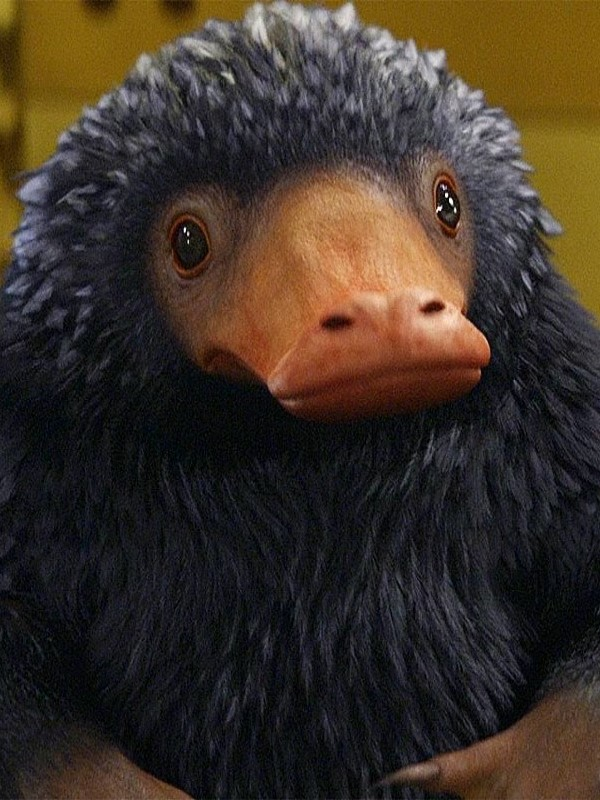
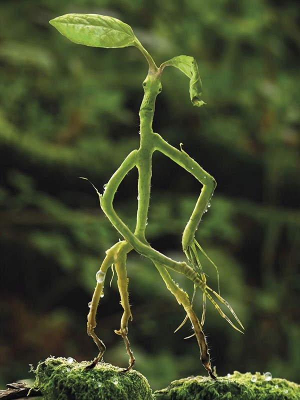
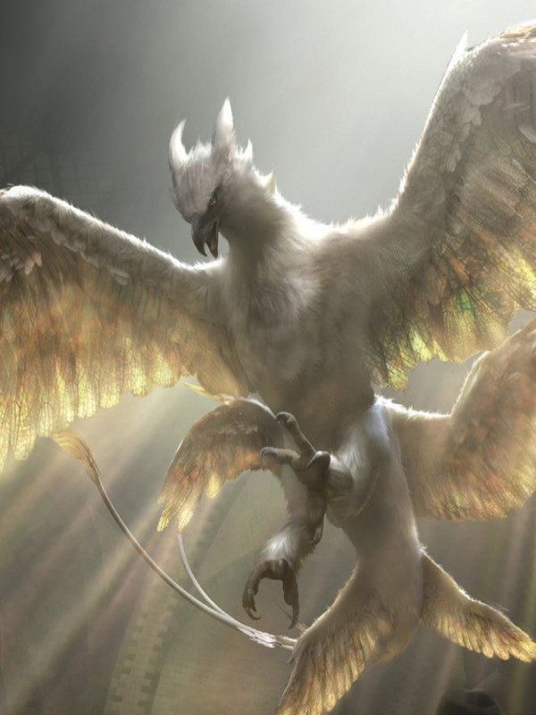
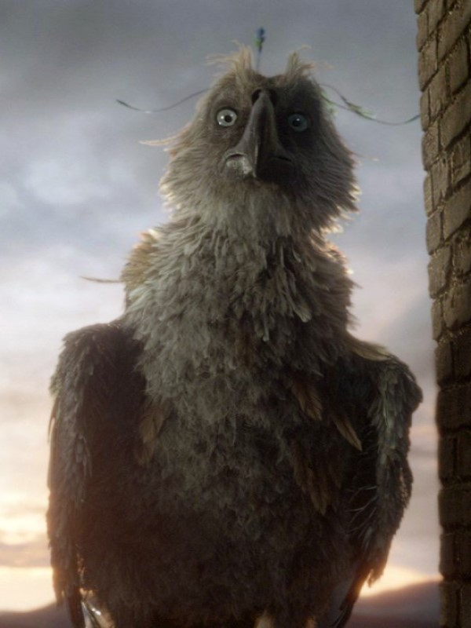
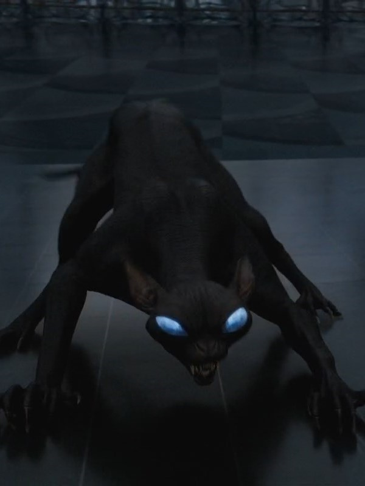
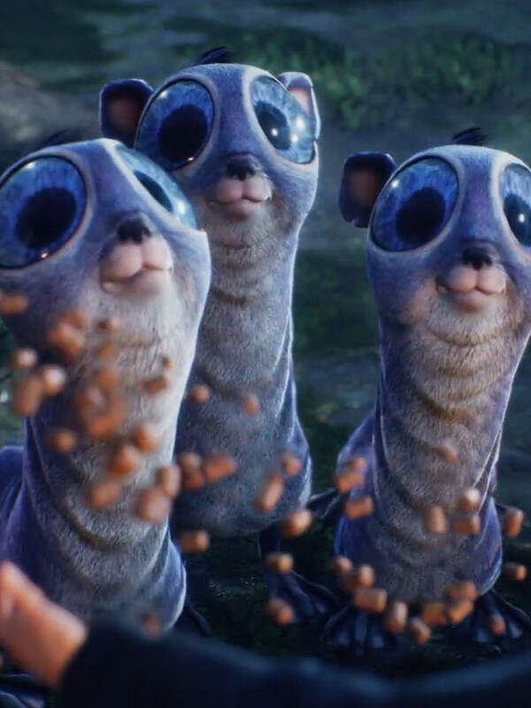

Animais Fantásticos
- 
- 
- 
- 
- 
- 
Niffler (Pelúcio)
São criaturas parecidas com roedores, com um longo focinho que se assemelha com o de um ornitorrinco, além disso possuem uma pelagem preta e fofa. Nativos da Grã-Bretanha, eles viviam em tocas a uma profundidade de seis metros abaixo do solo e produziam seis a oito filhotes em uma única ninhada.
Os niffler são gentis por natureza e podem até ser afetuosos com seus donos. No entanto, eles podem destruir pertences procurando por objetos brilhantes, e por isso não é aconselhável mantê-los como animais domésticos.
É um animal travesso que ama tudo o que reluz. Ele irá vasculhar suas jóias e escavar moedas com grande ferocidade destrutiva. Mantém os seus tesouros dentro de uma bolsa em sua barriga, que detém muito mais do que parece possível.
Bowtruckle (Tronquilho)
É uma besta mágica do tamanho de uma mão, comedora de insetos, moradora de árvores, com dedos longos e afiados (dois em cada mão), olhos castanhos e uma aparência geral de uma figura de palito de rosto achatado feito de casca de árvore e galhos, que se camufla em seu habitat natural. São imensamente difíceis de detectar.
É uma criatura pacífica, mas pode tentar arrancar os olhos de um atacante se algo ameaçar sua árvore ou a si mesmo. Pode se esquivar da maioria dos feitiços. Para tirar folhas ou madeira de uma árvore de Bowtruckle, seria necessário oferecer a ela piolhos ou ovos de fada como distração.
Thunderbird (Passaro-Trovão)
É uma ave mágica nativa da América do Norte, elas podem sentir o perigo, e até criar tempestades enquanto voam. Ela é muito parecida com a Fênix. A Escola de Magia e Bruxaria Ilvermorny nomeou uma de suas casas como Pássaro-Trovão em homenagem a esse animal. Ele também consegue controlar o clima, gerando nuvens e tempestades conforme voa, com relâmpagos deflagrados de suas asas.
O Thunderbird é descrito como tendo uma cabeça semelhante ao de um hipogrifo. Eles possuem três pares de asas poderosas e penas que brilham com padrões semelhantes a nuvens.
O Thunderbird é conhecido por mudar de cor conforme convoca tempestades, suas penas iridescentes mudando de vários tons de ouro para azul eletrizante, para cinza e prata, para branco e até para marinho profundo.
A pena de sua cauda pode ser usada como um núcleo em uma varinha mágica, com esse tipo de varinha sendo difícil de dominar, mas poderosa e habilidosa no trabalho de transfiguração .
Augurey (Agoureiro)
Também conhecido como Fênix irlandesa, é um pássaro mágico magro com aspecto triste, parecido com um pequeno abutre subnutrido, tem penas pretas esverdeadas e um bico afiado.
Extremamente tímido, o agoureiro vive em um ninho em forma de lágrima entre espinhos e amoreiras. O grito do Augurey sinaliza que a chuva aproxima.
Por muito tempo, acreditou-se que o grito triste do Augurey precedesse a morte, e os feiticeiros fariam o possível para evitar seus ninhos. No entanto, uma pesquisa determinou que o Augurey apenas canta quando está prestes a chover.
Matagot
É uma besta mágica que parece um grande gato preto.
Eles eram usados pelo Ministério da Magia da França para trabalhos manuais, como o manuseio da correspondência e a segurança de alguns departamentos. Normalmente, eles eram inofensivos, mas se provocados, se transformavam em criaturas muito ferozes.
Aparentemente são resistentes à maioria das formas de magia e feitiços, e podem se multiplicar ao serem atingidos por feitiços ofensivos, como o Feitiço Atordoante.
Mooncalf (Bezerro apaixonado)
É uma besta mágica tímida que só sai de sua toca durante a lua cheia.
Tem pele lisa, cinza claro, e quatro pernas finas que terminam em grandes pés chatos palmados. O Mooncalf também tem um pescoço muito longo e olhos azuis salientes que ficam no topo de sua cabeça.
Uma vez que está sob a luz da lua, executa complicados movimentos de dança enquanto fica de pé nas patas traseiras.
FAQ
- Qual a idade dos animais?
- As raposas são animais mamíferos e onívoros pertencentes à família Canidae. São vulpídeos de porte médio, caracterizados por um focinho comprido e uma cauda longa e peluda.
- Eles são fantásticos?
- Também apresentam como particularidade suas pupilas ovais, semelhantes às pupilas verticais dos felídeos.
- Qual a diferença?
- As raposas são animais mamíferos e onívoros pertencentes à família Canidae. São vulpídeos de porte médio, caracterizados por um focinho comprido e uma cauda longa e peluda.
- Como proteger?
- Também apresentam como particularidade suas pupilas ovais, semelhantes às pupilas verticais dos felídeos.


Dados
Contato

- contact@wizardministry.com
- +99 (99) 9999-9999
- Rua nove três quartos, nº 9
- Whitehall - Londres
- Doe 0 bitcoin para nos ajudar
- Seg à Sex das 8 às 18